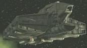
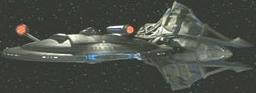
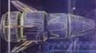
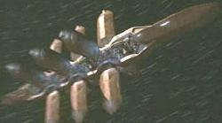
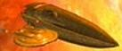
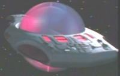
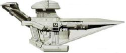
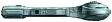
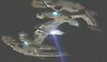

| Ekina Cargo usato da
Verad
per raggiungere Deep Space Nine. |
Invasive Procedures |
|
| Kallisko Cargo di
Boreal III distrutto dall'Entità
Cristallina nel 2368 presso
il Raggruppamento Brechtiano. |
Silicon Avatar |
|
| S.S. Lakul Nave da trasporto che ha portato 150
El-Auriani sulla
Terra nel
2293. |
Generations |
|
| Malad Nave trasporto. |
New Ground |
|
| Mondor Nave pakled. |
Samaritan Snare |
|
| Q'Maire Nave da guerra
talariana comandata dal capitano
Endar. |
Suddenly Human |
|
| Sherval Das Nave da trasporto
valeriana, il cui attracco a Deep Space
Nine in data stellare 46922.3 venne inizialmente negato dal Maggiore
Kira, poiché durante l'occupazione
cardassiana di Bajor i
Valeriani trasportarono armi per i
Cardassiani. |
Dramatis Personae |
|
| Teris Mern Shuttle
j'naii abbandonato. |
The Outcast |
|
| Astronave xyrilliana comandata
dal capitano Trena'L. |
Unexpected |
|
|
Nave mercantile
retelliana che ha
richiesto assistenza per le riparazione all'Enterprise nel
2152. Pilotata da Firek Plinn e Firek Goff.
La velocità massima del vascello è di warp 2.2. |
Precious Cargo |
|
|
Incrociatore da guerra
kriosiano che si incontra il 12 settembre
2152 con
l'Enterprise per recuperare il Primo Monarca rapita da due
retelliani. |
Precious Cargo |
|
 Astronave della milizia
takrit che abborda l'Enterprise
all'interno di una
Tempesta
neutronica nel
2152. Astronave della milizia
takrit che abborda l'Enterprise
all'interno di una
Tempesta
neutronica nel
2152. |
The Catwalk |
|
 Vascello militare
arkoniano comandato da Khata'n
Zshaar. Nel 2152 entra in contatto con l'Enterprise
e collabora per
recuperare Zho'Kaan e Tucker naufragati in una delle lune di un
gigante gassoso nello spazio
arkoniano. Vascello militare
arkoniano comandato da Khata'n
Zshaar. Nel 2152 entra in contatto con l'Enterprise
e collabora per
recuperare Zho'Kaan e Tucker naufragati in una delle lune di un
gigante gassoso nello spazio
arkoniano. |
Dawn |
|
 Nave temporale. Lo scafo sembra assorbire le
radiazioni elettromagnetiche. All'esterno la nave mostra solamente uno scafo
di pochi metri e, apparentemente, non è dotata di alcun tipo di propulsione.
Contiene circuiti organici e all'interno è molto più grande di ciò che
sembra. Ci sono condotti di parecchi metri, paratie varie e altre stanze. Il
motore produce radiazioni temporali che provocano loop temporali (Cause
and Effect). Il database di Daniels indica che la nave proviene da circa
900 anni nel futuro ed ha una propulsione a dislocamento temporale. Uno dei
metalli che compone la lega dello scafo è in uno stato semifluido. Appena
Tucker ha messo in funzione il
microtrasmettitore tutto ciò che aveva a che fare con la nave temporale è
sparito. Nave temporale. Lo scafo sembra assorbire le
radiazioni elettromagnetiche. All'esterno la nave mostra solamente uno scafo
di pochi metri e, apparentemente, non è dotata di alcun tipo di propulsione.
Contiene circuiti organici e all'interno è molto più grande di ciò che
sembra. Ci sono condotti di parecchi metri, paratie varie e altre stanze. Il
motore produce radiazioni temporali che provocano loop temporali (Cause
and Effect). Il database di Daniels indica che la nave proviene da circa
900 anni nel futuro ed ha una propulsione a dislocamento temporale. Uno dei
metalli che compone la lega dello scafo è in uno stato semifluido. Appena
Tucker ha messo in funzione il
microtrasmettitore tutto ciò che aveva a che fare con la nave temporale è
sparito. |
Future Tense |
|
|
Nave
temporale del XXXI secolo dal design simile ma leggermente differente alla
nave temporale descritta sopra. |
Future Tense |
|
Nave sulibana. Nel
2152 era sulle tracce della
radiazione temporale di una navetta recuperata dall'Enterprise,
con la quale ingaggia un combattimento per rubarla. È equipaggiata con un
sistema di occultamento ed è del periodo di Silik.
|
Future Tense |
|
 Flotta di navi tholiane. Nel
2152 tenta di rubare all'Enterprise
la nave temporale recuperata. Flotta di navi tholiane. Nel
2152 tenta di rubare all'Enterprise
la nave temporale recuperata. |
Future Tense |
|
 Nave da trasporto
prigionieri enoliana che nel
2152 in rotta verso la colonia
penale su
Canamar. Viene dirottata e rimane distrutta
nell'atmosfera di
Tamaal. Nave da trasporto
prigionieri enoliana che nel
2152 in rotta verso la colonia
penale su
Canamar. Viene dirottata e rimane distrutta
nell'atmosfera di
Tamaal. |
Canamar |
|
 Nave da pattuglia enoliana. Due di queste
navi intercettano la nave da trasporto prigionieri, della quale
Kuroda Lor-ehn aveva preso il controllo. I loro motori vengono
danneggiati durante il conflitto e la nave da trasporto riesce a
fuggire. Nave da pattuglia enoliana. Due di queste
navi intercettano la nave da trasporto prigionieri, della quale
Kuroda Lor-ehn aveva preso il controllo. I loro motori vengono
danneggiati durante il conflitto e la nave da trasporto riesce a
fuggire. |
Canamar |
|
 Shuttle enoliano usato per abbordare la
nave da trasporto
prigionieri enoliana in orbita presso
Tamaal e, in seguito, ha
attraccato all'Enterprise su cui ha riportato
Archer e
Tucker. Shuttle enoliano usato per abbordare la
nave da trasporto
prigionieri enoliana in orbita presso
Tamaal e, in seguito, ha
attraccato all'Enterprise su cui ha riportato
Archer e
Tucker. |
Canamar |
|
 Nave della
specie incorporea che vive nel subspazio, distrutta
dall'Enterprise incontrata a 150 anni luce dalla
Terra nel
2152. Nave della
specie incorporea che vive nel subspazio, distrutta
dall'Enterprise incontrata a 150 anni luce dalla
Terra nel
2152. |
The Crossing |
|
|
Astronave
vissiana comandata dal capitano
Drennik che
l'Enterprise incontra nei pressi di una ipergigante, a 25
anni luce dal sistema Vissia. Il suo nucleo di curvatura non è
dotato di costrittori magnetici, in quanto il flusso di
antimateria viene compresso prima che il deuterio sia iniettato
nel nucleo. |
Cogenitor |
|
 Vascello scientifico vissiano di piccole dimensioni
usato da
Drennik, accompagnato da Archer, per lo studio
ravvicinato di una ipergigante nel febbraio del 2153.
Lo scafo della navetta è realizzato in
trinesio. Vascello scientifico vissiano di piccole dimensioni
usato da
Drennik, accompagnato da Archer, per lo studio
ravvicinato di una ipergigante nel febbraio del 2153.
Lo scafo della navetta è realizzato in
trinesio. |
Cogenitor |
|
 Cargo
tarkaliano. Nel 2153,
viene attaccato da un trasporto terrestre assimilato dai
Borg. La nave viene soccorsa dall'Enterprise,
che trova vivi ancora due Tarkaliani parzialmente assimilati. Dopo il
salvataggio dei superstiti, la nave viene probabilmente abbandonata alla
deriva. Cargo
tarkaliano. Nel 2153,
viene attaccato da un trasporto terrestre assimilato dai
Borg. La nave viene soccorsa dall'Enterprise,
che trova vivi ancora due Tarkaliani parzialmente assimilati. Dopo il
salvataggio dei superstiti, la nave viene probabilmente abbandonata alla
deriva. |
Regeneration |
|
| 8 navi sulibane. |
The Expanse |
|
| Nave alla deriva incontrata nella
Distesa Delfica
dall'Enterprise nel
2153 appartenente ad una
razza sconosciuta. I 17 marinai sono deceduti per il fuoco di
armi a particelle o quando si è disattivato il supporto vitale. L'equipaggio
di questa nave ha trovato il modo di modificare i propri sensori per
scoprire la traccia ionica lasciata dalla nave
osaariana. Una delle navi distrutte
da questo vascello era una nave xindi. |
Anomaly |
|
| Nave osaariana utilizzata per
depredare l'Enterprise
nella Distesa Delfica
nel 2153. Gli
Osaariani hanno modificato i motori
della nave per schermare la traccia ionica che viene rilasciata durante la
navigazione. |
Anomaly |
|
| Due navi degli Xindi vengono
in contatto con l'Enterprise
nella Distesa Delfica
nel 2153. Gli occupanti,
appartenente alla specie rettile, abbordano l'Enterprise
per recuperare il loro informatore infiltrato. |
Rajiin |
|
| Nave skagaran atterrata su un
pianeta della Distesa Delfica
a metà del XIX secolo e in seguito disassemblata. |
North Star |
|
 Nave rigelliana
distrutta da una drone romulano occultato
olograficamente per apparire come l'Enterprise. Nave rigelliana
distrutta da una drone romulano occultato
olograficamente per apparire come l'Enterprise. |
United |
|
| Cargo di classe J, distrutto in un campo di asteroidi durante un
tentativo di fuga. |
Mudd's Women |
|
| Nave gorn. |
Arena |
|
 Astronave
monoposto di Lazarus. Astronave
monoposto di Lazarus. |
The Alternative Factor |
|
 Macchina
del giudizio universale, disattivata dalla distruzione della
Constellation. Macchina
del giudizio universale, disattivata dalla distruzione della
Constellation. |
The Doomsday Machine |
|
| Nave spia orioniana, autodistrutta. |
Journey to Babel |
|
| Nave a propulsione ionica. |
Spock's Brain |
|
| 2 Navi tholiane. |
The Tholian Web |
|
| Sonda delle balene megattere. |
Star Trek IV |
|
|
Nave tarelliana che si avvicina nel
2364 ad
Haven e che viene contattata dall'Enterprise. Sulla nave
viaggiano gli ultimi otto Tarelliani sopravvissuti alla guerra che ha
distrutto il loro mondo natale. |
Haven |
|
| Nave interplanetaria di classe 7 di Altec. |
The Outrageous Okona |
|
| Nave interplanetaria di classe 7 Straleb. |
The Outrageous Okona |
|
| 
Incrociatore da battaglia promelliano, distrutto. |
Booby Trap |
|
| Nave
sheliak. |
The Ensigns of Command |
|
| Nave dei Gatherers. |
The Vengeance Factor |
|
|
Vascello
di trasporto angosiano, distrutto. |
The Hunted |
|
| Trasporto di sicurezza angosiano. |
The Hunted |
|
| Nave
zalkoniana, comandata dal Commander Sunad. |
Transfigurations |
|
 Nave
di osservazione
talariana. Nave
di osservazione
talariana. |
Suddenly Human |
|
| 2 Navi da guerra
talariane. |
Suddenly Human |
|
| Fregata subluce. |
Final Mission |
|
| 2 Navi
kaeloniane. |
Half a Life |
|
| Nave
ktariana. |
The Game |
|
| Distruttore lysiano, distrutto dall'Enterprise. |
Conundrum |
|
| Nave
satarrana pilotata da Keiran MacDuff, probabilmente
autodistrutta. |
Conundrum |
|
| Nave diplomatica. |
Cost of Living |
|
| Nave
valtese comandata dal cancelliere Alrik. |
The Perfect Mate |
|
| 2 Incrociatori da battaglia Rekok. |
Man of the People |
|
| Fregata korvaliana di classe Antares, distrutta dalla
Khazara nel
settore Kaleb. |
Face of the Enemy |
|
| 3 Vascelli scientifici fernaliani di disegno
talariano. |
Emissary |
|
| Nave di Tosk. |
Captive Pursuit |
|
| Nave dei Cacciatori di Tosk. |
Captive Pursuit |
|
| Nave trasporto Molzrek. |
Q-Less |
|
| Nave flaxiana distrutta mentre tenta di entrare in curvatura. |
Improbable Cause |
|
 Nave vidiiana
con due membri di equipaggio: Motura e Dereth. Si rifugiano all'interno di un
asteroide per sfuggire all'inseguimento della
Voyager, dopo che Dereth ha rubato a
Neelix i suoi polmoni. Nave vidiiana
con due membri di equipaggio: Motura e Dereth. Si rifugiano all'interno di un
asteroide per sfuggire all'inseguimento della
Voyager, dopo che Dereth ha rubato a
Neelix i suoi polmoni. |
Phage |
|
 Nave
sikariana comandata da
Gathorel Labin. Nel
2371 invia una richiesta di soccorso a cui risponde la
Voyager. Nave
sikariana comandata da
Gathorel Labin. Nel
2371 invia una richiesta di soccorso a cui risponde la
Voyager. |
Prime Factors |
|
| 3 navi vidiiane che attaccano la
Voyager. |
Resolutions |
|
| 4 vascelli nasari. |
Favorite Son |
|
| 3 vascelli taresiani. |
Favorite Son |
|
| Nave da trasporto di
Seros il cui equipaggio viene ucciso dal
programma olografico Dejaren, successivamente distrutto da
Torres e
Tuvok. |
Revulsion |
|
| 3 Astronavi hirogene distrutte
nella singolarità quantica della stazione della rete di comunicazione. |
Hunters |
|
| 2 Mercantili malon. Uno distrutto nell'atmosfera di un pianeta di
classe
J nel quadrante Delta e un altro comandato dal controllore Vrelk. |
Extreme Risk |
|
| Astronave generazionale varro. Nel
2375 alcuni moduli della nave
si separano dal corpo centrale e viaggiano per conto loro. |
The Disease |
|
| Navi
hirogene di classe Venatic, lunghe probabilmente oltre un chilometro. |
Flesh and Blood - Part II |
|
|
Astronave
dei
Quarren. |
Workforce - Part II |
|